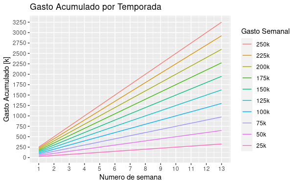

|
 |
||||||||||||||||||||||
Mis gastos superan mis ingresosDeberia entrar en pánicoHubo una pregunta que resono en los foros. ¿Es normal que nuestras finanzas sean negativas?
hecha por el usuario goldmen, la mayoria de managers pasamos por la misma situación, vemos pasar cada semana y tenemos cada vez menos dinero en las arcas, si tienes los fondos sufientes no es tan preocupante, pero si estas sumergido en la lucha por no caer en banca rota, cada balance semanal puede ser un suplicio. El Panorama DesoladorVivimos inmersos en nuestro club, mejorar su desempeño, lograr el título de nuestra división, buscar ascender y ser el mejor, todos empeñados en la misma meta, pero que hay de las finanzas, el rol oculto del juego, un rol que no recibe premios, pero un rol que castiga si fallas en él, un rol cuyo desempeño afectara directamente a tu club. Sabemos que nuestros ingresos semanales del club, estan determinados principalmente por: Recaudación por instalaciones, Ingreso por venta de entradas e Ingresos por espónsors. De acuerdo a la división en que se encuentre uno son montos casi fijos. Nuestros gastos semanales del club, se dan principalmente por: Sueldos de jugadores, Sueldos de empleados, Gastos de juveniles, Gastos por instalaciones y Gastos por el estadio. Aquí es donde interviene uno, dependera de que jugadores tenemos, que jugadores fichamos, cuantos juveniles entrenamos, que tipo y cuantos entrenadores contratamos, estas son variables que uno puede manejar, los gastos por instalaciones y estadio en cambio son casi fijos. Lo cierto es que la famosa diferencia entre nuestros ingresos y nuestros gastos semanales resulta casi siempre negativa, y mas aún cuando estás en divisiones competitivas, inclusive algunos managers pro llevan esta diferencia a cifras descomunales. Pero regresando a un plano mas genérico, me parece que sería muy importante el cuanto es que nos afecta una cifra negativa en el balance semanal a lo largo de la temporada, en el siguiente gráfico mostraremos el acumulado de gasto por una temporada considerando constante este gasto semanal. El rango se dispuso entre 25k y 250k USD, de saldo negativo en reporte semanal. Son cifras que parecen austeras pero que semana a semana suman, se puede ver que el acumulado máximo dentro de ese rango puede sobrepasar los 3.2 millones USD de gasto por temporada. En el gráfico no se considero que las 2 últimas semanas de temporada no se registra ingresos por instalaciones ni el estadio, así que la cifra puede ascender unos cuantos cientos de dólares mas. El Respiro FinacieroCómo afrontamos las pérdidas?, sin utilizar nuestro poder gerenciador, sin convertirnos en el lobo de Wall Street (omitiremos por ahora la influencia de transferencias de mercado), ni recurrir a la mafia, ni endeudarse en el Banco de Hierro. Pues bien, MZ creo los Tours donde te otorgan bonos cash para dar respiro a los clubs, son dos los Tours: uno a mitad de temporada y otro por el fin de temporada, cada uno ofrece un máximo de 600k € que convertido en el mercado MZ equivalen aproximadamente a 742k USD, ambos suman 1484k USD de ingreso extra por bonos por temporada, y si revisamos nuestra tabla referencial de gasto acumulado:
Tenemos que con ese dinero extra podemos afrontar sin problemas un gasto de hasta 100k USD de saldo negativo por semana, esto definitivamente es un respiro para el club, sin tener que hacer peripecias por el mercado ni algun otro sacrificio extra. RecomendacionesComo podemos reducir nuestro gasto semanal para no vernos envueltos en dificultades financieras ni llegar a la tan no deseada banca rota, situación que luego puede afectar en nuestro club negativamente. A continuación nombraré, algunas recomendaciones que podrían ser de ayuda, para reducir esos gastos al mínimo posible:
Si logras pasar un buen estado financiero sin necesidad de los bonos de temporada, entonces estas gerenciando bien tu club. Si quieren obtener mas recomendaciones, que por cierto hay muy buenas, pueden visitar el foro, el link del enlace se encuentra Aquí Saludos managers y busquen ese equilibrio financiero. |
||||||||||||||||||||||
 |
 |  |